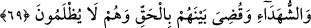

ki insanların çokluğundan kiminin başı ötekinin omuzunda, birinin eli ötekinin yanında.
Çocuk yine çocuk, yetişkin yine yetişkin, genç yine genç, ihtiyar yine ihtiyar olarak
diriltilir. Daha sonra Arş’ın altından ateşli bir rüzgar esip arzı düzler ve arz tıpkı tek bir
sayfa gibi apaçık ve dümdüz bir hal alır. Sonra Allah İsrâfil’i diriltir ve onun Beytü’l-
makdis’teki kayadan Sur’a üfürmesi üzerine ruhlar tıpkı arı vızıltısı gibi bir ses
çıkararak çıkar ve bütün ufukları kaplar. Sonra her nefis, vahşî hayvanlar, kuşlar, can
taşıyan bütün varlıklar Allah’ın bildirmesi ile kendi cüssesine gider. “Bir de ne
göresin, onlar ayağa kalkmış bakıyorlar!” Sonra Allah onlara dilediği şekilde
muâmele eder.
Şeyh Sa’dî der ki:
İnsan bir kere mezar toprağına yattı mı
Yüzünün tozunu ancak kıyamet günü silkebilir
Şimdi gaflet yakasından başını kaldır ki
Yarın utançla önüne bakmayasın
İki gözün iki çeşme ağla ki
Üstündeki kirler temizlensin
69. Yeryüzü, Rabbinin nûru ile aydınlanır, kitap konulur, peygamberler ve şâhidler
getirilir ve aralarında hakkaniyetle hüküm verilir. Onlara asla zulmedilmez.
“Yeryüzü, Rabbinin nûru ile aydınlanır,” Kıyamet arasâtı/meydanları aydınlanıp ışık
saçan bir hal alır. Bu, Allah Teâlâ’nın kulları arasında hükmetmek üzere Kürsî’sine
nüzûl ettiği sırada gerçekleşir.
Nur, etrafa yayılan ve görmeyi kolaylaştıran ışıktır. “Rabbinin nûruyla”, orada ikâme
edeceği adaletle, demektir. Adâlet yerine istiâre yoluyla nur kelimesinin kullanılması,
nur her tarafı süsler ve hakları açığa çıkarır. Nitekim zulüm de karanlık diye
adlandırılır. Bir hadîste “Zulüm, kıyamet günü karanlıklara dönüşecektir!”[147]
buyrulmuştur. ‘Karanlıklar’dan maksad kıyâmetin sıkıntılarıdır. Yâni zulüm o gün
sâhibinin sıkıntılara düşmesine sebep olur. Ya da zulüm, müminlerin nuru kendi önlerini
aydınlatıp dururken, zâlimin karanlıklarda kalmasına ve yolunu bulamamasına yol açar.
‘Nur’dan maksad, adâlet olduğu için Rabb ism-i celîli, yeryüzüne âid zamire izâfe
edilmiştir. Böyle bir izâfet ancak ‘nur’ ile yeryüzünde onun yaydığı adâlet ve hikmetle
yeryüzünün aydınlanıp süslenmesi kasdedildiği takdirde güzel olur.
Mânâ ise şöyledir: Yeryüzü, dünyada olduğu gibi ışık saçan birtakım cisimlerin
aracılığı bulunmaksızın Allah’ın orada kıyamet günü yaratacağı bir nurla aydınlanır. O
zaman, başkalaşmış durumdaki yeryüzü; güneş, ay ve benzeri ışık saçan cisimler